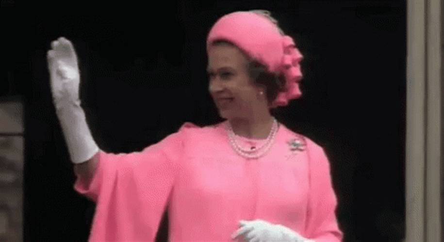

Project 3
Forward Kinematics
+ Live Visualization
I wrote a small Rust runtime that reads a URDF, computes forward kinematics for every link, and streams the 4×4 matrices over a rosbridge-style TCP gateway. A three.js page on the other side draws the arm live. For the demo I built a 6-DOF arm and taught it to wave at the camera.

The arm
Six joints: waist yaw, shoulder and
elbow pitch, then a 3-DOF wrist
(wrist_roll, wrist_pitch, gripper_yaw).
Each articulated joint carries a small cylinder as a fixed-child link so
the arm actually looks like a robot in the viewer, not a stack of sticks.
I wrote the URDF by hand. The runtime loads it through the same
/param_server the autograder uses, so nothing in the demo
path is special-cased.
The wave
Four states: home, arm_up, wave_right,
wave_left. The FSM sits in the right/left loop. The hand
sweeps with wrist_roll and the waist leans a bit each way
so the body turns too, the way the Queen does when she acknowledges
both sides of the crowd.
Small trick that makes it look right: with the forearm pointing
straight up, wrist_roll rotates around the world vertical
axis. That is what makes the hand look like it is waving instead of
spinning on its wrist like a propeller.
How it is drawn
The browser cannot open raw TCP sockets, so a tiny Python relay
(bridge.py) forwards newline-delimited JSON between the
viewer's WebSocket and the runtime's TCP port on 127.0.0.1:9095.
Everything above that is vanilla rosbridge.
The viewer pushes the URDF text to /param_server,
waits for robot_state_publisher to accept it, parses the
<visual> tags into three.js groups, then subscribes
to /xform_world. On every message it drops each link's
4×4 matrix into the corresponding group with
matrix.fromArray(t.matrix). The matrix layout is
column-major and matches THREE.Matrix4 exactly, so no
transpose is needed.